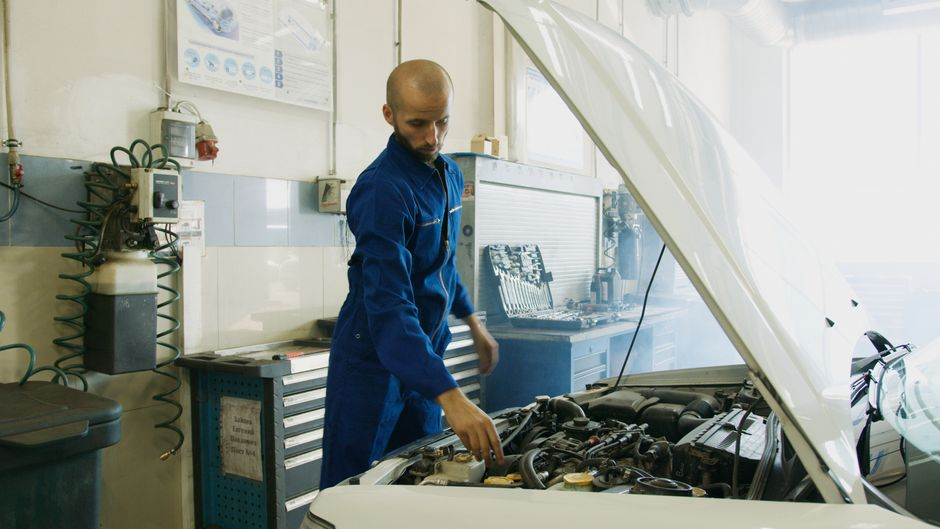

Cómo verificar y reemplazar las válvulas de escape por ti mismo

Photo: Artem Podrez / Pexels
Si estás buscando ahorrar en reparaciones de tu automóvil, este artículo te guiará paso a paso en cómo verificar y, si es necesario, reemplazar las válvulas de escape por ti mismo. Este proceso puede parecer complejo, pero con un poco de cuidado y paciencia, podrás realizarlo sin necesidad de un profesional.
Preparación previa
Antes de comenzar, es importante asegurarte de que tienes todos los materiales necesarios y que tu automóvil esté en un lugar seguro y accesible. Necesitarás:
- Un guante de jardinería para protegerte las manos
- Un par de tijeras o una herramienta para cortar cadenas de seguridad
- Un par de guantes de trabajo
- Un destornillador torques o llave de rueda
- Un chaleco reflectante para seguridad
- Un soporte de rueda (si es necesario)
Asegúrate de que tu automóvil esté apoyado en un terreno firme y que estés equipado con todo lo necesario.
Verificación de las válvulas de escape
-
Examina el escape exterior: Comienza desmontando cualquier capa exterior que cubra el escape, como el difusor o el parachoques trasero. Esto te dará acceso al escape de forma más directa.
-
Investiga visualmente: Observa si hay signos de corrosión, goteo o obstrucción en el escape. Un goteo regular puede ser un indicador de que una válvula está fallando.
-
Escucha durante el arranque: Asegúrate de que tu vehículo esté en reposo y arranque el motor. Escucha si hay un ruido metálico o chirriante durante el arranque, que podría indicar que una válvula está dañada.
-
Revisa la temperatura: Si notas un olor a quemado o un ruido de quemado en el escape, podrías estar enfrentando un problema con las válvulas de escape. Asegúrate de que la temperatura de la manguera térmica no esté excesivamente caliente.
Reemplazo de las válvulas de escape
Si has identificado que una válvula de escape está dañada y necesita reemplazo, sigue estos pasos:
-
Asegura el vehículo: Si es necesario, sujeta la rueda con un soporte de rueda para evitar accidentes.
-
Desconecta el cable de arranque: Este paso es crucial para evitar daños eléctricos.
-
Desconecta las válvulas de escape: Utiliza un destornillador torques para desactivar las válvulas de escape. Esto puede requerir varios pasos, así que toma tu tiempo.
-
Sustituye la válvula dañada: Reemplaza la válvula de escape dañada por una nueva. Asegúrate de que la nueva válvula sea compatible con tu vehículo.
-
Reconecta todo lo necesario: Reinstala las válvulas de escape y asegúrate de que todo esté correctamente conectado. Revisa que no haya ningún goteo.
-
Prueba el vehículo: Arranca el vehículo y verifica que el escape funcione correctamente. Asegúrate de que no haya ruidos extraños o fugas.
Ejemplo de escenario
Imagina que estás realizando este proceso en un Volkswagen Golf 2010. Luego de verificar el escape, notas un ruido metálico durante el arranque. Utilizas un destornillador torques y descubres que una válvula de escape está dañada. Reemplazas la válvula y pruebas el vehículo, notando que el ruido desaparece. Ahora tu Golf está funcionando como nuevo.
Conclusión
Reemplazar las válvulas de escape por ti mismo puede ser un proyecto desafiante, pero es posible con un poco de paciencia y atención a los detalles. Recuerda siempre que la seguridad es prioritaria, así que asegúrate de tomar todas las precauciones necesarias. Si no estás seguro de tus habilidades, no dudes en buscar ayuda profesional.